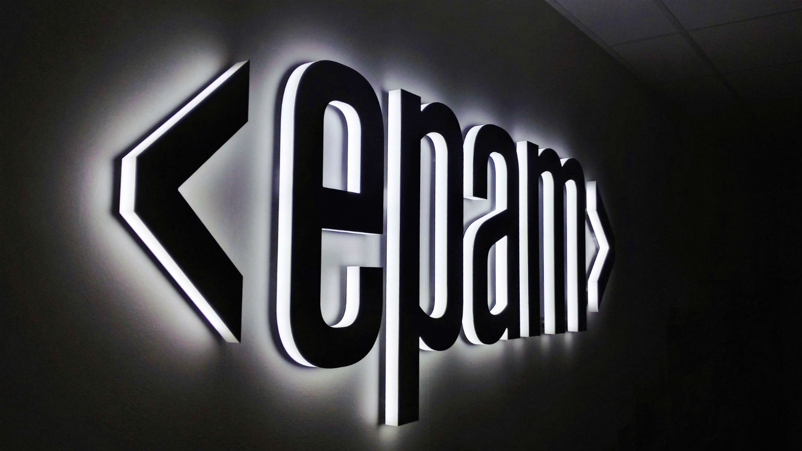
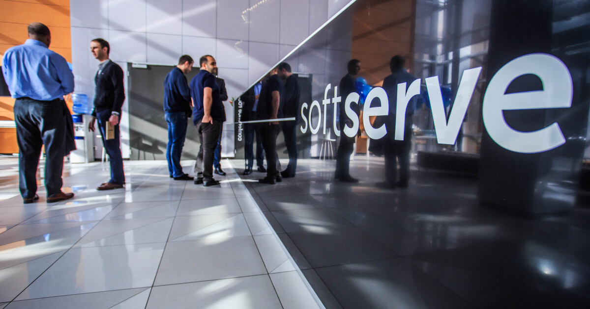
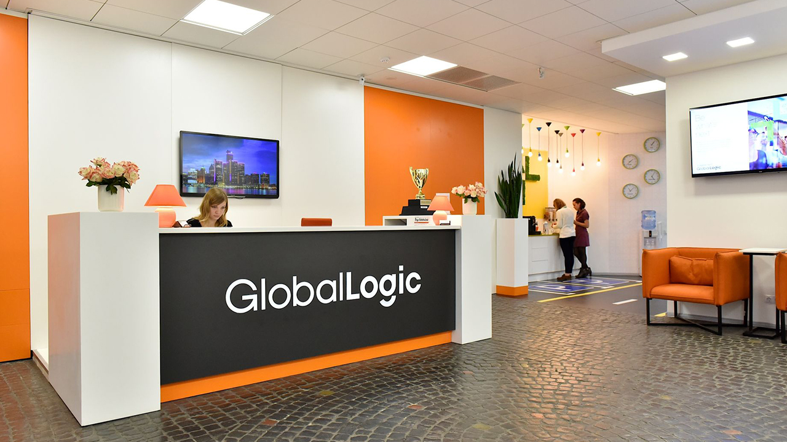
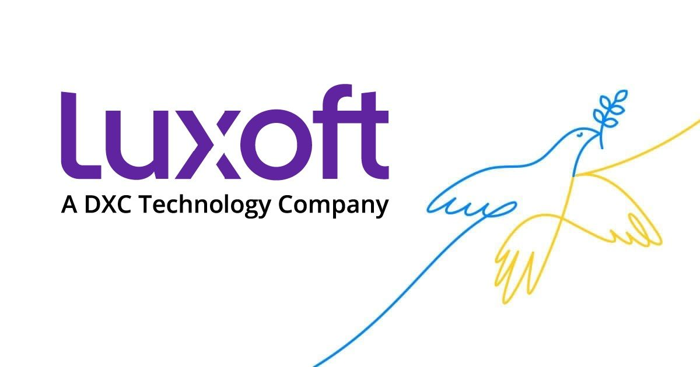
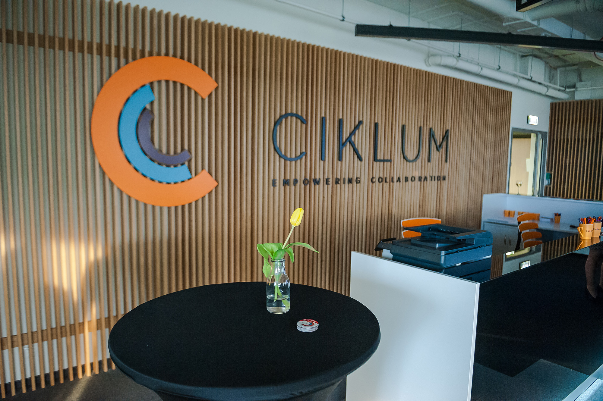

-

#1 EPAM
З 1993 EPAM використовує прогресивний досвід розробки програмного забезпечення, щоб стати провідним світовим постачальником послуг цифрової трансформації та лідером у галузі розробки цифрових і фізичних продуктів, а також послуг з розробки цифрових платформ.
Завдяки своїй інноваційній стратегії, інтегрованим консалтинговим та проєктним можливостям та унікальній «інженерній ДНК», глобальні гібридні команди EPAM допомагають зробити майбутнє реальністю для клієнтів і спільнот у всьому світі, створюючи кращі корпоративні, освітні та медичні платформи, які об’єднують людей, оптимізують досвід і покращують життя.
Чотири рази вона посіла місце як найкраща IT-компанія у списку компаній, які швидко зростають, за версією Fortune 100. EPAM уже три роки поспіль входить до списку 25 найбільших світових агентських компаній за версією Ad Age.
-

#2 SoftServe
SoftServe — це провідна ІТ-компанія, що займається консалтингом та надає послуги у сфері цифрових технологій. Ми забезпечуємо інноваційність, якість і швидкість, яких очікують наші клієнти та їх користувачі.
Компанія SoftServe була заснована у 1993 році у Львові, Україна. Компанію започаткували два аспіранти Національного університету «Львівська політехніка» Тарас Кіцмей та Ярослав Любинець, вони ж і визначили першочерговий напрямок діяльності компанії — розробка програмного забезпечення.
Центральний офіс компанії було засновано у Львові.
Станом на 2017 SoftServe була однією з найбільших аутсорсингових ІТ-компаній в Україні, зі штатом у 4500 співробітників, поступаючись кількістю персоналу лише EPAM Systems . У 2018 році кількість працівників компанії збільшилася до 5000. Вже на початку 2019 року кількість працівників збільшилася до 6000.
-

#3 GlobalLogic
GlobalLogic — IT-компанія, що займається створенням програмних продуктів.
Налічує понад 16000 працівників у Аргентині, Великій Британії, Ізраїлі, Індії, Китаї, Польщі, Словаччині, США, Україні, Хорватії, Чилі та Швеції.
Головний офіс GlobalLogic знаходиться у Сан-Хосе (Каліфорнія, США).
Компанія займається розробкою програмних продуктів у таких сферах як цифрові медіа та телекомунікації, автомобільні технології, охорона здоров'я, фінанси, роздрібна торгівля та електронна комерція.
Компанію засновано 2000 року зі штаб-квартирою у місті Вієнна, штат Вірджинія та інжиніринговим центром у місті Нойда, Індія.
-

#4 Luxoft
Україна – одна із найпотужніших локацій Luxoft із понад 3500 фахівцями у Києві, Одесі та Дніпрі, а також віддалено.
Luxoft Ukraine входить до числа найбільших ІТ-компаній України та створює інноваційні технологічні рішення для клієнтів у сферах фінансів, автомобілебудування, енергетики, рітейлу, охорони здоров’я, туризму, медіа та розваг, тощо.
Виняткова орієнтація на клієнтів, комплексне управління проєктами, оперативне вирішення складних задач, створення якісних програмних продуктів із використанням найновіших технологій, а також вражаючі можливості для професійного зростання – це далеко не повний перелік факторів, що вирізняють Luxoft Ukraine на ІТ-ринку України та дозволяють із року в рік бути в колі лідерів.
-

#5 Ciklum
Ciklum - міжнародна компанія, що займається розробкою програмного забезпечення та аутсорсингом ІТ-послуг, в якій працює понад 3500 осіб.
Ciklum - міжнародна компанія, що займається розробкою програмного забезпечення та аутсорсингом ІТ-послуг, в якій працює понад 3500 осіб.
Компанія Ciklum була заснована у 2002 році в Україні (м. Київ ) датським уродженцем Торбеном Майгаардом, який очолював Раду директорів до 2019 року. З моменту заснування компанія виросла до більш ніж 3500 співробітників.
Центри розробки програмного забезпечення та філії компанії знаходяться у Великій Британії, Швейцарії, Данії, Україні, Білорусії та Пакистані.